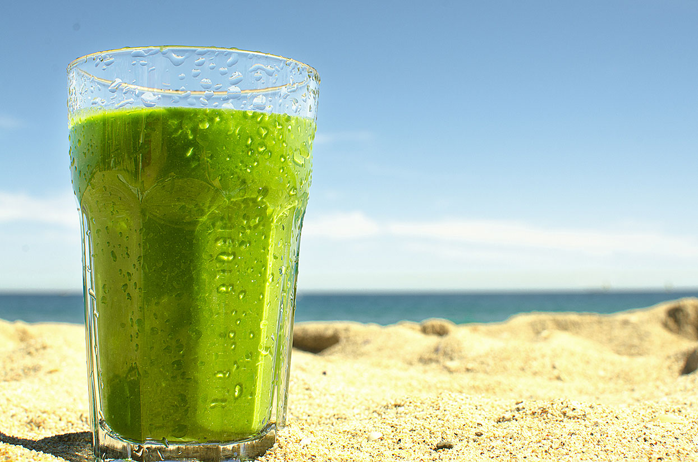

A delicious spinach smoothie that will make you forget you are eating your greens. You can throw in some cashews for some extra protein.
It's plant-based and packed with nutrients! No bitter spinach taste. Full of healthy ingredients!
Here is how to make the best spinach smoothie! The sweet tart flavor is so irresistible, you will forget it is a healthy green drink.
Servings Per Recipe: 2
Calories: 170
Protein 4.6g, Carbohydrates 21.9g, Saturated fat 1.6g, Fiber 3.4g, Sugars 12.4g, Potassium 518.2mg, Magnesium 97.3mg